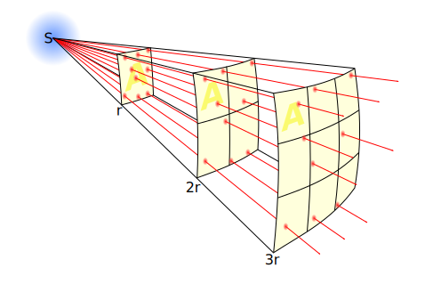

Radiography Inverse Square Law Calculator
What are you solving for?
Hidden Text
Hidden Text
The Inverse Square Law

Inverse Square Law by Borb CC BY-SA 3.0
Solving for Distance uses the formula:
$$ D_2=\sqrt{I_1\cdot D_1^2\over I_2} $$
Solving for Intensity uses the formula:
$$ I_2 = \frac{I_1\cdot D_1^2}{D_2^2} $$
\( I_1 = \) The original Intensity
\( D_1 = \) The original source to image-receptor Distance
\( I_2 = \) The new Intensity
\( D_2 = \) The new source to image-receptor Distance
Visualization of Distance Changes